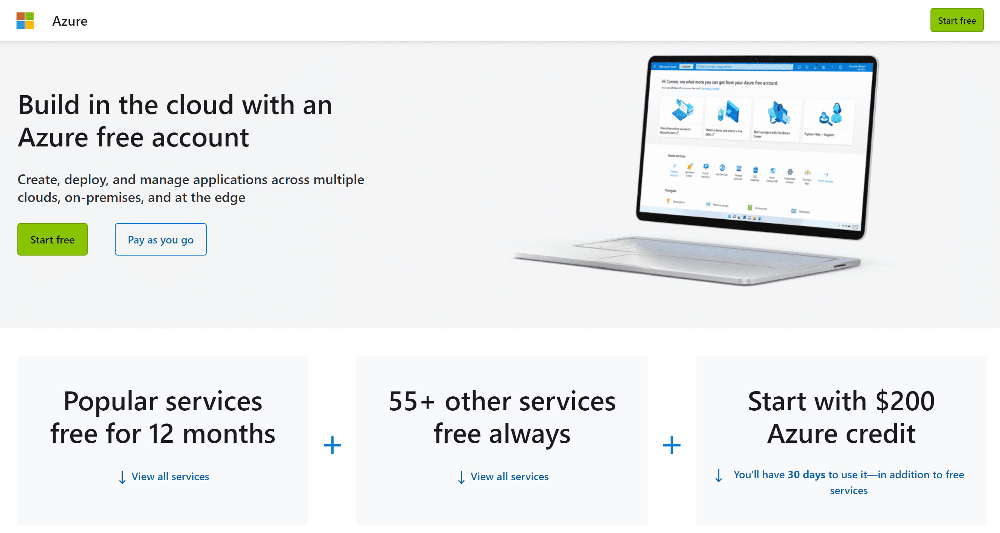
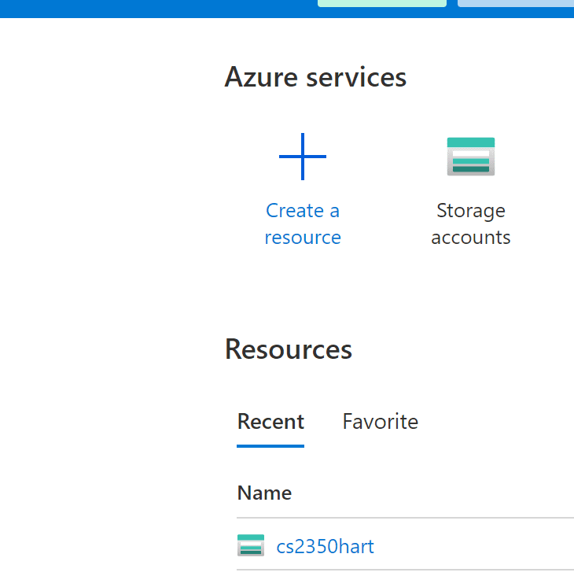
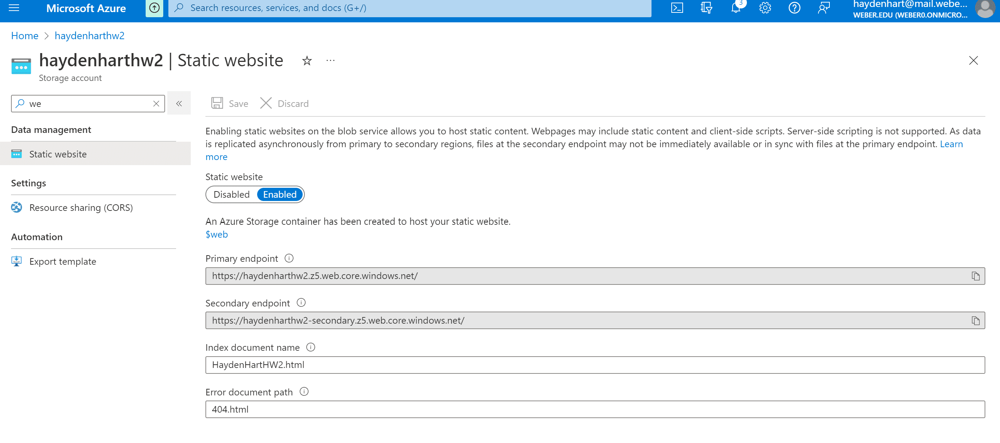

How to Publish

This is some example text
This is some example text
When publishing on the web, Microsoft has a service that can do that, Azure. The first thing that you want to do is, download the Azure Portal.
Then you want download the Azure Storage extension. Then create a storage account. Then go to create a static website.
Then upload all the file you want on your web page to the storage account that is linked with the static web page.
A URL from Azure will look like https://haydenharthw2.z5.web.core.windows.net/
It can also look like https://haydenharthw2.z5.web.core.windows.net/File2
Or A Url can look like HW1
Internet icons created by srip - Flaticon